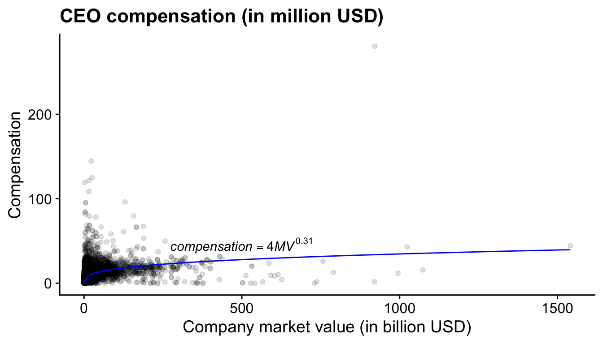

CEO compensation is something that people in finance, accounting, economics, and outside of academia are interested in. The topic is probably the one with the most overlap between accounting and finance. In these notes, I will focus on two research questions:
How high can we expect the total compensation of a CEO to be based on some simple economic assumptions. Too high CEO compensation is sometimes seen as a signal of bad corporate goverance. To measure what ‘too high’ means, we first need to establish a baseline of what normal levels of compensation actually mean.
How should CEOs be incentivised: equity or options? And how schould we measure whether CEOs have appropriate incentives? Pay-for-performance is a big topic in accounting, finance, and economics and there is a long standing discussion of what the best performance measure is for a CEO.
Altough I am not a specialist in this literature, I am comforable with the type of economic theories that researchers test in this literature.5 The theories in these notes are all based on the overview paper by Edmans and Gabaix (2016). Finding a good overview paper is the best start to any research project. I am going to stress the role of theory in data analysis a lot. Some of you will have a topic that is at first sight less theory driven or rely more strongly on very specific knowledge about your setting. One of my goals is to convince you that even with these projects it is useful to think about the underlying story that you are testing.6 I have been mocked by multiple people in the department for asking one too many times: “I understand, but what is the story?”
The first theory on CEO compensation is mathematically easy to follow. We assume that the value of a firm depends (\(V\)) on three variables: how good the CEO is (\(T\)), how much labour is available to the firm (\(L\)), and how much capital the firm has available (\(K\)).7 This is obviously a simplification and that is fine. All theories are simplifications and too much nuance in a theory can make a theory worthless (Healy 2017). We use (T)alent to describe how good the CEO is but you can also think of the CEO’s ability or connections as part of \(T\).
The condition (2.2) implies that there is nothing special about a specific size (\(V\)) of the firm. Bigger is not necessarily better, smaller is not necessarily better. This is a very traditional constant returns to scale assumption.
We also assume that the total compensation or wage (\(W\)) of the CEO is whatever value they create over the cost of labor (\(w_L\)) and the cost of capital (\(r\)).
With these equations in hand we can derive an empirical relation that we can test with data. The derivations are not very difficult, they are just a bit tedious.
First, let us find the optimal level of capital from the CEO’s point of view. That is, the CEO will try to attract the amount of capital that will maximise their wage. Mathematically, that means that we need to find the level of \(K\) for which the first derivative of the CEO’s wage to \(K\) equals 0.8 The \(\frac{\alpha_K}{\alpha_K}\) is a bit weird and obviously it cancels out. It’s the result of using the chain rule. The numerator is the result of taking the derivative of an exponential function. The denominator is the result of fact that we need to multiply the derivative of the exponential function with the derivative of \(\frac{K}{\alpha_K}\). The whole reason why \(V\) was set-up this way was because it makes things cancel out; it’s mathematically convenient.
\[\begin{align*} 0 = \frac{\partial W_T}{\partial K} &= T^{\alpha_T} \frac{\alpha_K}{\alpha_K} \Bigl( \frac{K}{\alpha_K} \Bigl)^{\alpha_K - 1} \Bigl( \frac{L}{\alpha_L} \Bigl)^{\alpha_L} - r \\ T^{\alpha_T} \Bigl( \frac{K}{\alpha_K} \Bigl)^{\alpha_K} \Bigl( \frac{L}{\alpha_L} \Bigl)^{\alpha_L} \frac{\alpha_K}{K} &= r \\ \frac{V \alpha_K}{K} &= r \\ \frac{V}{r} &= \frac{K}{\alpha_K} \end{align*}\]
Next, we can find the optimal level of labour that the CEO should attract.
\[\begin{align*} 0 = \frac{\partial V}{\partial K} &= T^{\alpha_T} \Bigl( \frac{K}{\alpha_K} \Bigl)^{\alpha_K} \Bigl( \frac{L}{\alpha_L} \Bigl)^{\alpha_L - 1} - w_L \\ T^{\alpha_T} \Bigl( \frac{K}{\alpha_K} \Bigl)^{\alpha_K} \Bigl( \frac{L}{\alpha_L} \Bigl)^{\alpha_L} \frac{\alpha_L}{L} &= w_L \\ \frac{V}{w_L} &= \frac{L}{\alpha_L} \end{align*}\]
We can plug these results into equation (2.3) and we get
\[\begin{equation} W^*_T = V - V \alpha_K - V\alpha_L = (1 - \alpha_K - \alpha_L) V = \alpha_T V \end{equation}\]
I like the basic intuition and deriviation of the model. The derivation is straightforward and (some of) the implicit assumptions are relatively easy to accept. The effect of the CEO depends on the size of the firm (\(V\)). When there is more capital and labour available a more talented CEO will have a bigger impact.9 If a CEO is a talented people manager, the advantage of this talent will be larger when there are more employees working in the company. The model also predicts a clear quantitative relationship between firm size, \(V\), and CEO compensation, \(W_T\), i.e. that relationship should be linear. This is a nice result that we can test with data. In contrast we would not be able to test the relationship between CEO talent and compensation because talent is very difficult to measure. We can measure \(V\) but not \(T\).
One of the assumptions in the model is that the CEO takes the ultimate decision and they have an incentive to maximise firm value because they keep the all the value after workers and investors have been paid. As it turns out when you assume competitive labour and financial markets, that assumptions does not really matter a lot for the predicted relationship between wage and firm size (Edmans and Gabaix 2016).10 That is, you could set up the model so that investors take the final decision where they offer an incentive contract to the CEO who then chooses the number of workers that maximise the their compensation under the contract. The predictions for the model would be very similar to what we have here and we would have to deal with the contract as an extra complication. Good theory papers will explain when simplifications matter and when they do not. Nevertheless, This model is too simple to capture reality perfectly, but that is not the goal of the model and of this exercise. The idea is to see whether we can find a reasonable baseline for CEO compensation that we can test against the data. Here, we have established that there should be a positive relation between the company’s size and the CEO’s compensation and the relation is larger when the CEO is more talented.
We will test the predictions of the model with data from S&P500 companies in the US. I made the data available for UWA students on LMS.11 I really want to find an open dataset where we can test the same model. In the Appendix of this chapter, you can find how you can download the same data straight from the WRDS database. The data is downloaded from Compustat and Execucomp. A lot of you will use these are similar databases in your research project. I did not clean or check the data for this exercise. In your own project, you should show a better understanding of how the data are gathered and what they include than what I am displaying here.12 The CEO compensation data is fairly complete. It includes changes in the value of equity and options. Market value also includes all outstanding financial instruments on the company.
The code below does multiple things in R. I do not expect you
to understand or even replicate what I have done here. I include
it as a reminder of what is possible with some coding. I hope it
may serve as an inspiration further down the track when you are
doing your own research project.
library(tidyverse)
library(cowplot)
# Read the data from a custom folder. If the data is not in this
# folder, change the path to the folder. Rename some of the
# variables to make them easier to work with.
folder = "data/"
us_comp = readRDS(paste0(folder, "us-compensation.RDS")) %>%
rename(total_comp = tdc1)
us_value = readRDS(paste0(folder, "us-value.RDS")) %>%
rename(year = fyear, market_value = mkvalt)
# Match the compensation data with the value data based on
# company key and year
us_comp_value = left_join(select(us_comp, gvkey, year, total_comp),
us_value, by = c("year", "gvkey"))
# Run the non-linear regression and save the results as an
# equation to put on the figure. This goes beyond what we are
# going to do in this module.
power_law_start = list(a= 5, b = .15)
power_law_comp =
nls(total_comp/1000 ~ a * (market_value/1000)^b,
data = us_comp_value, start = power_law_start)
eqn_comp = substitute(
italic("compensation") == a * italic("MV") ^ b,
list(a = as.numeric(format(coef(power_law_comp)[1],
digits = 2)),
b = as.numeric(format(coef(power_law_comp)[2],
digits = 2))))
# create the plot
plot_comp_value =
# Add dataset and define x and y axis
ggplot(us_comp_value, aes(x = market_value/1000,
y = total_comp/1000)) +
# Add the observations as points to the plot
geom_point(alpha = .125) +
# Draw the results of the power_law regression on the plot
stat_function(fun =
function(x){
coef(power_law_comp)[1] *
x ^ coef(power_law_comp)[2]},
colour = "blue") +
ggtitle("CEO compensation (in million USD)") +
# Add label for the x-axis
ylab("Compensation") +
xlab("Company market value (in billion USD)")(ref:us-comp-value-plot) Relation between CEO compensation and market value for the largest US firms (2011-2019).
print(plot_comp_value +
annotate("text", y = 45, x = 500, parse = TRUE,
label = as.character(as.expression(eqn_comp))))Figure 2.1: (ref:us-comp-value-plot)
The qualitative relationship holds quite well. Larger companies have CEOs with higher compensation. However, the relationship is far from linear and looks more like a power function. Clearly there are other effects at play. In this sample, the power coefficient is 0.31 .13 Prior studies have found a coefficient more closely to 0.33 (Baker, Jensen, and Murphy 1988). Remember that in our setup the CEO can grow the firm at will by attracting more capital and more labour. That assumption is probably too strong. Later, we will see that there other theories that describe the relation between CEO compensation and firm size and they seem to describe the data better.
There are two things you should take away from this section. What we have just done here is a research project in a nutshell. First, we used theory to derive an empirical relation between two observable variables. Second, we tested the prediction against data. The evidence I present is not in the form of a complicated statistical analysis but in a graph. You will see in the remainder of this notes that I refer over and over to the connection between theory (‘your story’) and the data. The structure I used in this chapter (Introduction, Theory, Data Analysis, Conclusion ) is also the structure of most research papers and your thesis.
An other important message is that I did not speak about a causal relation between market value and compensation. Our theory gave us a mathematical relation between the two variables and it is that relation we tried to find in the data. This is absolutely fine and I think a worthwile way to do research. However, this focus away from causal relation sometimes clashes with the popular statistical techniques and frame of mind that is presented in textbooks on causal inference (Angrist and Pischke 2008; Cunningham 2018) and which permeates the literature in accounting and finance.14 This has been a source of frustration for me for awhile. I never could clearly articulate my unease. This podcast by physist Sean Caroll helped me crystalise my thoughts. He explains that from for a physicist on a fundamental level there are no causes. Fundamental particles follow equations and that is it. What we think of as causal relations, happens at a higher level of abstraction. If you have the time, give it a listen. The title of the podcast is appropriate: ‘Mindscape.’. I have seen students and established researchers alike get confused when their theory includes both equilibrium relations and a causal story. Throughout these notes I will try to explain the differences so that you can avoid the confusion when you start your own research project.
To get access to the Wharton Research Data
Services, you first
will have to obtain a username and password through your
university’s subscription. To get access to the databases, you
have to install the Rpostgres package (Wickham, Ooms, and Müller 2021) and make a
file where you can securely store your password. The WRDS
website
gives excellent guidelines on how to do that. You can then use
the following code to establish a connection with the WRDS
services.
library(RPostgres)
wrds <- dbConnect(Postgres(),
host='wrds-pgdata.wharton.upenn.edu',
port=9737,
dbname='wrds',
user='stimas',
sslmode='require')With an SQL string, we define which data we want. We send the SQL query to the database via de connection. We download the actual data and save in an R object. We close the data, see whether our dataset is the right one, and then save the R object as a file on our computer.
library(tidyverse)
sql1 <- "SELECT year, gvkey, cusip,
exec_fullname, coname, ceoann,
execid, bonus, salary,
stock_awards_fv, stock_unvest_val,
eip_unearn_num, eip_unearn_val,
option_awards, option_awards_blk_value,
option_awards_num, tdc1, tdc2,
shrown_tot_pct,
becameceo, joined_co, reason
FROM EXECCOMP.ANNCOMP
WHERE year > 2010 AND ceoann = 'CEO'"
res <- dbSendQuery(wrds, sql1)
compensation <- as_tibble(dbFetch(res)) %>%
rename_all(tolower)
dbClearResult(res)
glimpse(compensation)
saveRDS(compensation,
"../data/us-compensation-new.RDS")Now, we do the same for the market value of the company.
gvkeys <- unique(compensation$gvkey)
length(gvkeys)
sql2 <- paste0("SELECT fyear, gvkey, mkvalt, ni ",
"FROM COMP.FUNDA ",
"WHERE fyear > 2010 ",
"AND gvkey in ('",
paste(gvkeys, collapse = "','"),
"')"
)
res <- dbSendQuery(wrds, sql2)
value <- as_tibble(dbFetch(res)) %>%
rename_all(tolower)
dbClearResult(res)
glimpse(value)
value <- distinct(value)
glimpse(value)
saveRDS(value, "../data/us-value-new.RDS")Page built: 2022-02-01 using R version 4.1.2 (2021-11-01)